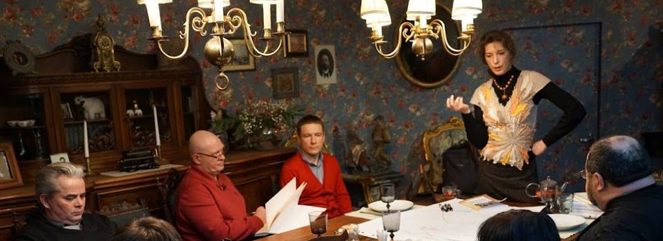

Лаборатория Визуального мышления
Схематизация
Лаборатория Визуального мышления
1. 25.06.2014 вводный
семинар
А. Горбань «Типология схем» (
краткое содержание
2. 06.09.2014
А. Горбань «Визуальное мышление» (
3. 26.09.2014
доклад
А. Горбань «Язык визуального мышления. Маркеры предвнимания» (
4. 24.10.2014 доклад А. Горбань «Технологии визуального мышления»(краткое содержание
часть1
часть2
часть3
5.?.11.2014 доклад А. Горбань «История визуального мышления» (краткое содержание
6. 16.12.2014
А. Горбань «Графические методы описания данных»
7. 22.02.2015
А. Горбань «Инфографика»
видео
8. 11.03.2015
М. Осовского «Обсуждение карты исторической реконструкции создания методов визуализации»
9. 04.06.2015
В. Кульматова «Схематизация диалектики: борьба рассудка с разумом. Создание визуальной модели логики Гегеля»
10. 13.09.2015
С. Голованова «Визуализация в „Духовных упражнениях“ Игнатия Лойолы (XVI в.)»
11. 01.10.2015 Дуэль визуализаторов на выставке «HR Expo»
12. 10.10.2015
Б. Родомана
13. 04.04.2016
А. Горбань «Использование визуализации в бизнес-процессах»
14. 14.09.2016 интеллект-хакатон А. Горбань «К понятию феномена эстетического интеллекта»
часть 1
часть 2
15. 19.04.2016 «Слово и образ в научных исследованиях» Докладчик — Елена Борисовна Козеренко, к.ф.н, зав. кафедрой лингвистики и компьютерных моделей языка Института проблем информатики РАН, руководитель магистерской программы «Компьютерная лингвистика и формальные модели языка» (семинар П.Б.Мрдуляша МПГУ)
16.??? (семинар П.Б.Мрдуляша МПГУ)
17.??? (семинар П.Б.Мрдуляша МПГУ)
18. 4.08.2016
презентация доклада
(видео) «Об организации Института Графического языка» (1933 г.) Л.А.Бызова в Библиотеке им. Ф. М. Достоевского
19. 26.10.2016
А. Горбань «Визуализация как инструмент работы с неопределенностью»
20. 11.03.2017
А. Горбань «Интеллектуал и его среда обитания. К понятию эстетического интеллекта»
21. 15.03.2017 п
резентация книги
(видео) В. Бринтона «Графическое изображение фактов» в РАНХиГС на Грушинской социологической конференции в рамках секции «Визуализация исследовательских данных и ее место в сервисной экономике будущего» (М. Осовский, А. Новичков)
22. 15.05.2017
презентация книги
(видео) В. Бринтона «Графическое изображение фактов» в Библиотеке им. Ф. М. Достоевского (А. Горбань, А. Новичков)
23. 15.06.2017
доклад CIO компании «Еврохим» В.Н.Чибисова
«Большие данные и визуальное мышление в корпорации».
24. 19.07.2017 доклад Осовского «Организационные планы» в компании Valadorus (Яворский)
расшифровка
25. 26.08.2017 завтрак
на тему осознанного движения
(Левенчук, Осовский, Сироткина, Шевченко)
26. 25.10.2017 сессия «Схематизация и использование графических методов в стратегическом планировании и территориальном развитии» (Горбань, Корякин, Осовский) в рамках XVI Общероссийского форума «Стратегическое планирование в регионах и городах России» —
Форума стратегов
27. 11.11.2017
«Первые Гастевские чтения»
(Гастев-Ткаченко, Горелов, Осовский, Петров, Сироткина и др.)
Гастевские чтения, 2017
: материалы научно-практической конференции, посвященной 135-летию со дня рождения А. К. Гастева (1882–1939) / под редакцией А. А. Ткаченко-Гастева, к. и. н., доцента О. И. Горелова, к. и. н., доцента С. И. Гореловой, М. Е. Осовского. — М. : Изд-во МПСУ, 2019. — 94 с.
28. 12.02.2018 Круглый стол:
«Образ будущего как основа экономической стратегии развития регионов»
(Д. Унжаков, В. Буров, А. Чадаев, А. Акпарова, А. Панин, В. Гончаров)
29. 3—4.03.2018 День открытых данных.
Семинар «Открытые данные в образовании»
(М. Осовский, Ю. Апухтина, С. Устинов, И. Кракчиева, М. Лозовский, С. Лещина, И. Радченко, Е. Римских, В. Третьяков, Р. Яворский)
30. 29.03.2018
в Аналитическом центре Правительства РФ — М. Осовский, И. Каракчиева, Ю. Апухтина, М. Лозовский (Российский учебник. Дрофа — Вентана), Д. Санатов (ЦСР «Северо-Запад»), Д. Баландин (e-publish.ru), Р. Яворский, К. Семенова (ВШЭ), А. Сиротский, С. Неизвестный, С. Лещина (Викимедиа.РУ)
31. 24.05.2018 Доклад научного руководителя Школы системного менеджмента А. Левенчука.
мероприятие в Leader-ID
анонс в фб
📂презентация
🎦видео
vimeo
🎧 аудио
✍️ расшифровка
рефлексия
, книга
«Визуальное мышление»
32. 16.06.2018 Доклад С. Л. Катречко «Трансцендентальная модель сознания (Аристотель, Кант, Гуссерль)».
Анонс в фб
🎦 видео
33. 5.07.2018 Доклад Д. Бахтурина «Работа П. М. Якобсона «Процесс творческой работы изобретателя» (1934 г) Анонс в фб,🎦 видео ✍️ расшифровка
34. 29.08.2018 Доклад CIO компании «Еврохим» В.Н.Чибисова «Цифровая трансформация. Цифровые регионы»
📂1-я презентация «Цифровой регион»
, 📂
2-я презентация «Инструментарий»
35. 15.09.2018
Первая открытая лаборатория по визуальному мышлению
36. 12.10.2018 Семинар по визуализации данных в стратегическом планировании (Доклад А. Панина, М. Барковой)
фото
аудио
, ✍️ расшифровка
37. 25.10.2018 сессия « Визуализация данных в стратегическом планировании. Как представляется «образ» будущего?» (Осовский, Панин, Крыловский, Баркова, Корякин, Тюпышев) в рамках XVII Общероссийского форума
«Стратегическое планирование в регионах и городах России»
38. 12.04.2019 Доклад В. Б. Исакова "Правовая аналитика в графическом выражении".
Анонс
Обновление страницы:
📺 Видео
